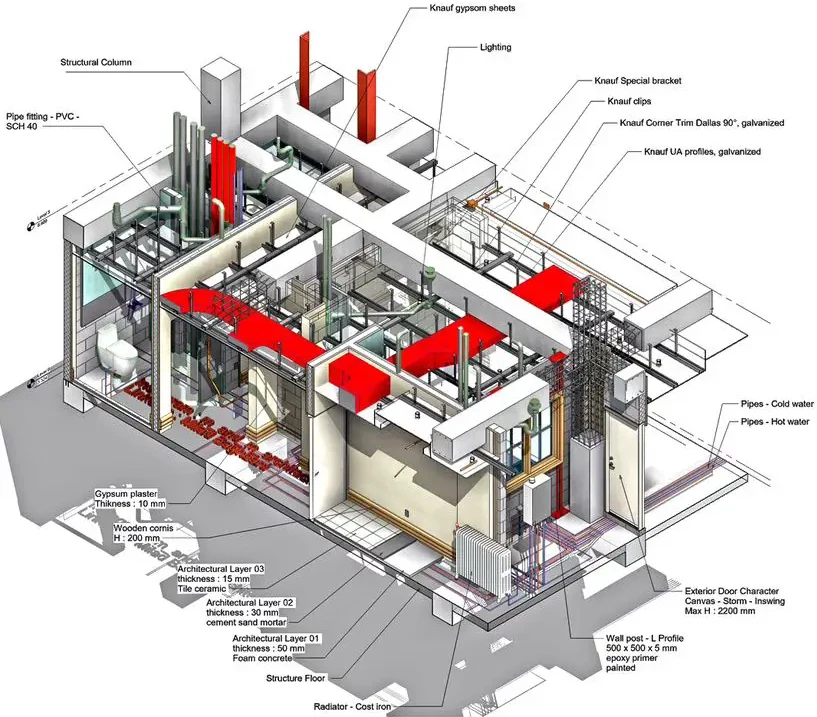
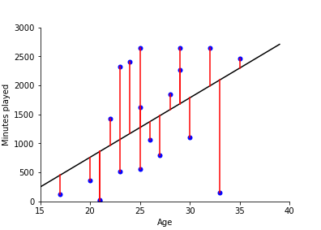

Software Modelling with UML
Software Engineering
(for Intelligent Distributed Systems)
A.Y. 2024/2025
Giovanni Ciatto
Compiled on: 2025-02-18 — printable version
Modelling in Engineering
Architects and civil engineers create models of the things they are going to build
Model of a Bridge

Model of a Building
Model in Statistics / Machine Learning
In statistics (and machine learning) a model is a mathematical representation of a real-world process
(commonly attained by fitting a parametric function over a sample of data describing the process)

e.g.: $f(x) = \beta_0 + \beta_1 x $ where $f$ is the amount of minutes played, and $x$ is the age
What is a model?
(cf. https://plato.stanford.edu/entries/models-science/)
A model is a simplified representation of something complex
What are models useful for?
-
Understanding of the real world, via simplification and abstraction (i.e., by removing details)
- think about the many models of the atom (Bohr, Rutherford, etc.), or the wooden miniature of a bridge
-
Explain a phenomenon by fitting the model onto the observed data, to reconstruct the process
- think about the attachment theory in psychology
-
Predicting the dynamic behaviour of a system (possibly, before/without building the system)
- think about the weather forecast, or, again, the wooden miniature of a bridge
Models are simplifications
(cf. https://en.wikipedia.org/wiki/All_models_are_wrong)
“All models are wrong, but some are useful” — George Box
- Each model is stressing some aspects of the real world, and ignoring others
- Focus on the purpose and the context of a model:
- if the goal is understanding, the model should be simple and intuitive
- if the goal is prediction, the model should be accurate and precise
Example
- Newton’s Laws: they are not fully correct (Einstein’s relativity refined them)
- but they are still useful for engineering and daily physics
Why do engineers model systems?
-
Models allow engineers to design and study a system before building it
-
Building is commonly more expensive and time-consuming than modelling
-
Models can verify (to some extent) the system they want to create, before fully building it
-
Models allow designers to take design decisions early, and cheaply
-
Models can be used to represent and communicate the design of a system
- useful for collaboration and documentation…
- … which in turn allow new people to join the project
What about software?
-
Writing software implies modelling the world and representing it in a formal way
- so, in a sense, the source code is a model of the world (or, at least, of the problem)
-
Yet, the source code of a project can easily grow in complexity
- think about large projects with millions of LoC:
- how can a person keep them all in their mind?
- how could that person transfer all that knowledge to others?
- think about large projects with millions of LoC:
-
Indeed, as software projects tend to grow complex, the aforementioned motivations for modelling apply to software as well
- we need more abstract (than code) and visual ways to represent software systems
Software systems are commonly modelled using the Unified Modelling Language (UML)
The Unified Modelling Language (UML)
(cf. https://en.wikipedia.org/wiki/Unified_Modeling_Language)
-
General-purpose, graphical, modeling language in the field of software engineering
- intended to provide a (semi)-formal way to visualize the design of a software system
-
UML is a standard (ISO/IEC 19501:2005) managed by the Object Management Group (OMG) since 1997
-
Actually, nowadays, most practitioners do not properly use UML, but instead produce informal diagrams
- more or less inspired by UML, but not strictly following the standard
-
In any case, the focus is on giving a graphical language to represent various aspects of a software system
What can UML represent?
- UML can represent many aspects of a software system, via as many sorts of diagrams
- broadly categorized in structural and behavioural diagrams

- Class Diagrams: overview on the classes and their relationships
- Sequence Diagrams: interactions between objects in a time sequence
- Activity Diagrams: flow of control in a process
- State Diagrams: transitions between states of an object
- Component Diagrams: architectural components and their relationships
- Deployment Diagrams: physical deployment of artifacts on nodes
- Use Case Diagrams: actors and use cases they interact with
Class Diagrams
- Modelling the structure of a system
- Focus on classes and their relationships
Class Diagrams Overview
(cf. https://en.wikipedia.org/wiki/Class_diagram)
Class Diagram Example
(Remark: this is not a “good” diagram from a real system, but just an example to show the graphical syntax)
Class Diagram Explained (pt. 1)
-
Focus on classes (here intended as data types)
- report class names
- report sort of classes (e.g.
abstract,interface,enum,class)enums are types whose values are fixed and enumerated
-
Focus on relationships among classes
- inheritance a.k.a. “extends” (solid line with a triangle)
- implementation a.k.a. “implements” (dashed line with a triangle)
- aggregation (solid line with a white diamond): the container may exist without items
- composition (solid line with a filled diamond): the composed entity cannot exist without the component
- association (solid line, with or without arrow): any other relevant sort of symmetric (no arrow) or asymmetric (with arrow) relation
- inheritance a.k.a. “extends” (solid line with a triangle)
Class Diagram Explained (pt. 2)
- Focus on the attributes of each class
- private attributes (beginning with a
-, or red square) - protected attributes (beginning with a
#, or yellow diamond) - public attributes (beginning with a
+, or green square) - abstract attributes (italics)
- static or class attributes (underline)
- fields or properties, i.e. attributes without parentheses (beginning with a unfilled symbol)
- methods or functions, i.e. attributes with parentheses (beginning with a filled symbol)
- private attributes (beginning with a
Class Diagram Explained (pt. 3)
Common questions
- should you include type information in attributes? $\Rightarrow$ not mandatory, but recommended
- should you include visibility information in attributes? $\Rightarrow$ yes
- should you include Python’s underscore prefixes for visibility (
_or__)in the diagram $\Rightarrow$ as you like - should you include all attributes?
- if you’re willing to provide a complete model of the code’s structure $\Rightarrow$ yes
- if you’re willing to provide an overview of the public API $\Rightarrow$ public attributes only
- if you’re willing to an overview of the types $\Rightarrow$ no
Sequence Diagrams
- Modelling the interaction among the components of a system
- Focus on objects / components and their interactions over time
- i.e., who’s sending which message to whom, when
Sequence Diagrams Overview
(cf. https://en.wikipedia.org/wiki/Sequence_diagram)
@startuml hide footbox
actor Actor participant Participant database Database
activate Actor Actor -> Participant: request activate Participant
Participant -> Database: query activate Database
note right of Actor vertical bars represent participants’s control flow, which are synchronous end note
Database -> Database: internal\nprocedure activate Database deactivate Database
Database –> Participant: results deactivate Database
Participant –> Actor: response deactivate Participant
== New situation ==
alt response is ok Actor -> Participant: another request activate Participant
Participant -> Participant: stateless\nprocedure
Participant -> Actor: another response
deactivate Participant
else response has error Actor –> Participant: shut down destroy Participant create participant “Another Participant” as Participant2 Actor –> Participant2: start another participant end @enduml
-
The diagram is vertical, each column corresponds to the life-line of a participant
-
The vertical axis corresponds to time, the lower, the later
-
Participants can be objects or entities of any sort (e.g. OOP objects, infrastructural components, etc.)
- special icons may be used for special participants, such as actors or databases
- participants are assumed to be already up and running at the beginning of the sequence
- yet they can be created and destroyed during the sequence
-
Horizontal arrows represent messages sent from one participant to another
- the label of the arrow is the message itself
- an informal description of the message can be used too, but formal is better
- straight line is for requests, dashed line is for responses
- the label of the arrow is the message itself
-
White vertical bars on a participant’s life-line represent the control flows
- i.e., the participant is active during that time
- this is way to stress the duration of activities
- participants get activated starting to process some received message, deactivated when done
- i.e., the participant is active during that time
-
Branching (if) or loops are represented via ad-hoc frames
-
Double horizontal lines may be used to denote a new interaction sequence
Sequence Diagram Example in OOP (pt. 1)
Visualising the Iterator Pattern (compliant to Python’s iterator protocol)
Classes
class MyIterator:
def __init__(self, items):
self.__items = items
self.__index = 0
def __next__(self):
if self.__index >= len(self.__items):
raise StopIteration
current_item = self.__items[self.__index]
self.__index += 1
return current_item
class MyCollection:
def __init__(self):
self.items = []
def add(self, item):
self.items.append(item)
def __iter__(self):
return MyIterator(self.items)
Sequence described in the diagram
collection = MyCollection()
collection.add("A")
collection.add("B")
collection.add("C")
iterator = iter(collection)
while True:
try:
item = next(iterator)
print(item)
except StopIteration:
break
@startuml hide footbox
participant “Client” as Client participant “MyCollection” as Collection participant “MyIterator” as Iterator
== Initialization == activate Client Client -> Collection: add(“A”) Client -> Collection: add(“B”) Client -> Collection: add(“C”)
== Retrieving the Iterator == Client -> Collection: iter() activate Collection create Iterator Collection -> Iterator: Create Instance Collection –> Client: return Instance deactivate Collection
== Iterating Over Elements == loop Client -> Iterator: next() activate Iterator Iterator -> Iterator: Check if more elements alt More Elements Available Iterator –> Client: return Current Item else No More Elements Iterator –> Client: raise StopIteration deactivate Iterator end end destroy Iterator
@enduml
Sequence Diagram Example in OOP (pt. 2)
-
Participants are named after classes, yet they refer to instances of those classes
-
Arrows are named after method calls when possible
-
The following pieces of code are completely equivalent in Python:
iterator = iter(collection)
while True:
try:
item = next(iterator)
print(item)
except StopIteration:
break
for item in collection:
print(item)
Sequence Diagram Example in Distributed Systems
State Diagram
TBD
Activity Diagram
TBD
Components Diagram
TBD
PlantUML
TBD
Lecture is Over
Compiled on: 2025-02-18 — printable version